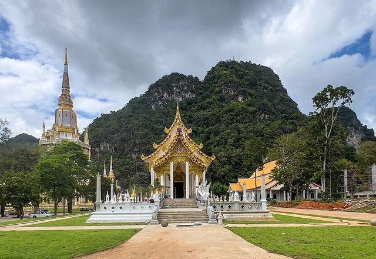
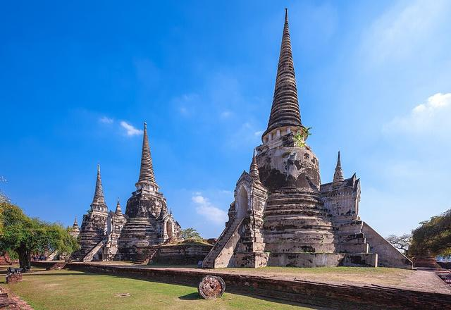
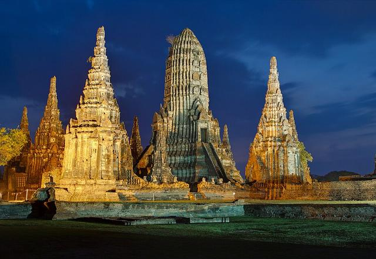
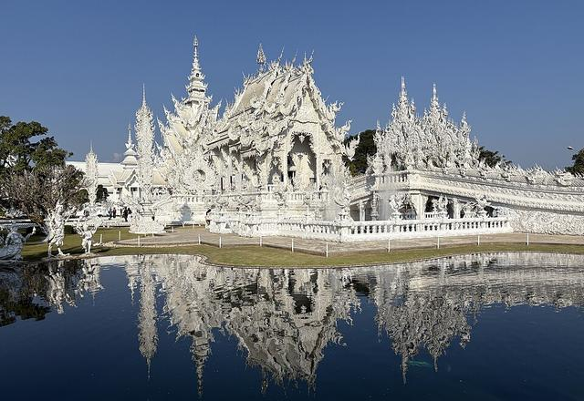
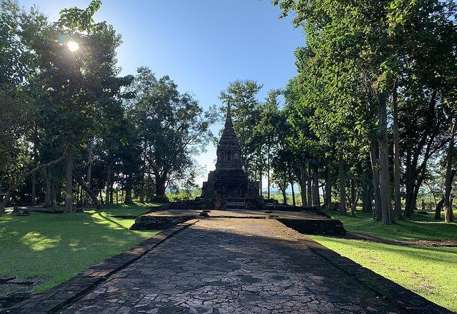
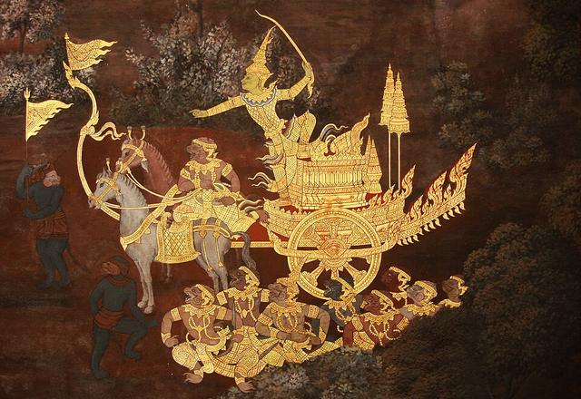

Thailand, 15–23 January
A relaxed, safe, vegetarian-friendly honeymoon for two: a beach and a first scuba dive in Phuket, the White Temple in Chiang Rai or Tiger Cave Temple in Krabi, and Bangkok's palaces and Ayutthaya. Four plans to compare, all under ₹2.3 lakh. Planned hour by hour with at least 8 hours of sleep every night. You fly out from Mumbai (you're dropped at the airport) and fly home straight to Pune.
Get quotes from travel agencies
An agency can book your flights, hotels, airport pickups and drivers, and give you one number to call if anything goes wrong in Thailand. You keep the free time. Tap Message on WhatsApp to open a chat with a short message already typed: who you are, your dates, the cities and a budget of around ₹1.5–1.8 lakh. You can edit it before sending.
See the message that will be sent
Hi, I'm Shripad Agashe. My wife and I are planning our honeymoon in Thailand, 15 to 23 Jan 2027, flying from Mumbai. We're thinking Phuket, Krabi and Bangkok: some beach time, a beginner scuba dive and heritage sites. We're vegetarian. I'm looking for budget-friendly options, around ₹1.5–1.8 lakh for both of us (a little flexible). Could you please share a quote?
Pune & Maharashtra
Veena World
Customised Holidays team · Chinchwad officeBig Maharashtra brand with an office in Chinchwad. Ask for their customised (not group) Thailand honeymoon desk.
WhatsApp +91 89568 48708Call 1800 22 7979
Kesari Tours
Tailormade desk · many Pune branchesAsk for “Kesari Tailormade” so you get a private trip, not a group tour.
WhatsApp +91 99303 30066Call 1800 266 9080
Parrot Vacations
Viman Nagar, PuneSmall Pune agency offering custom Thailand trips with vegetarian meals and Hindi/Marathi-speaking guides. Few online reviews, so check them carefully.
WhatsApp +91 91136 18706Call +91 91136 18706
All-India
Thomas Cook India
Individual customised tours · Pune branchesLarge, long-established company. Their Pune Camp branch has many good reviews.
WhatsApp +91 88791 42236Call 1800 2099 100
Pickyourtrail
Fully custom, planner-led tripsBuilt for custom trips like yours. Some reviews say hotels were below the promised category, so get hotel names in writing.
WhatsApp +91 63693 02849Call +91 92402 04872
Thailand-based
TripThaiTour
Bangkok · Hindi-speaking guidesBangkok ground operator for Indian travellers. States TAT licence 14/04232. Mostly works with agents, but you can ask for a direct quote.
WhatsApp +66 89 949 6235Call +66 89 949 6235
Explera DMC
Thailand · veg and Jain kitchensThai ground operator for the Indian market, covers Krabi and Bangkok. States TAT licence 14/05119. Mainly B2B, so they may refer you to a partner.
WhatsApp +66 93 656 8090Call +66 93 656 8090
Also worth a call (no WhatsApp listed): SOTC 1800 209 3344. Each WhatsApp number above appears on the agency's own website (checked 18 Nov 2026).
Ask every agency
- The exact hotel names and room type, in writing.
- Who runs the trip on the ground in Thailand, and a 24/7 Thai phone number.
- Which flights are included, and whether checked bags are included.
- Whether pickups and drivers are private (not shared vans).
- The cancellation and change rules, and when payment is due.
- The final price including 5% GST and TCS.
Compare quotes fairly
- Get 3–4 quotes for the same hotels and route.
- Check a quote against the budget below. Paying 10–15% more than doing it yourself is normal for the convenience.
- Pay by card or bank transfer to the company's account, never a personal one.
- On packages, Indian agencies add 5% GST and TCS (2% from April 2026; you can claim TCS back in your tax return).
Choose a plan
Four ways to do 15–23/24 January, all under a hard cap of ₹2.3 lakh for two, with scuba, named hotels and Bangkok nights out included. Flight prices are real fares from Google Flights; hotels, food and buses are estimates. Tap a plan to see its days and costs.
Plan A · Krabi
Cheapest and most relaxed · 9 days · 8 nights · 15–23 Jan
Good
- Lowest cost, no early flights or night travel
- Tiger Cave Temple, Railay, and Kunal's favourite resort
- Two Bangkok nights out plus Ayutthaya
Trade-offs
- No White Temple or Chiang Rai
- More beach than heritage
Day by day
- Day 1 Fri 15 Jan
IndiGo nonstop Mumbai → Phuket 1:15 pm IST, lands 7:15 pm. Sugar Marina Resort, Kata, by 9:30 pm. - Day 2 Sat 16 Jan
Beginner scuba at Kata Beach, 8:30 am – 12:30 pm: pool practice, then a shallow beach dive (5–6 m). Afternoon free, sunset on the beach. - Day 3 Sun 17 Jan
Wat Chalong 9:30 am, Big Buddha 11:20 am, rest, Phuket Old Town and Sunday night market 4:45 – 8 pm. - Day 4 Mon 18 Jan
Ferry Phuket → Ao Nang 8:30 am – 12 pm through the islands. Aonang Paradise Resort. Beach and sunset. - Day 5 Tue 19 Jan
Tiger Cave Temple climb 7:15 am (1,260 steps), Railay Beach and Phra Nang Cave Beach in the afternoon. - Day 6 Wed 20 Jan
Beach morning. AirAsia Krabi → Bangkok 4:45 pm, Holiday Inn Express Sukhumvit 11 by 7:45 pm. - Day 7 Thu 21 Jan
Sleep in. Grand Palace 11 am, Wat Pho 2:30 pm, Wat Arun 3:45 pm, Erawan Shrine 7 pm. 🌙 Night out 1: Chinatown street food 8 pm, Above Eleven rooftop on Soi 11 at 10:30 pm, bed by 1:30 am. - Day 8 Fri 22 Jan
Sleep till 9:30 am. Ayutthaya by train, 11 am – 6:30 pm. Nap. 🌙 Night out 2: Jodd Fairs night market 9 pm, then Khao San Road or the RCA clubs until about 1 am. - Day 9 Sat 23 Jan
Sleep till 9 am, breakfast, check out. Grab to Suvarnabhumi at 10:30 am. Air India Express nonstop Bangkok → Pune 1:50 pm, home by 5 pm.
Cost for two
| Item | Details | Cost |
|---|---|---|
| Flights + ferry, with bags | Mumbai → Phuket ₹29,854 · ferry ≈ ₹4,000 · Krabi → Bangkok ₹9,721 · Bangkok → Pune ₹31,855 | ₹80,000 |
| Hotels, 8 nights | Sugar Marina Resort – Art, Kata 3 × ₹4,500 · Aonang Paradise Resort 2 × ₹3,000 · Holiday Inn Express Sukhumvit 11 3 × ₹5,000 | ₹34,500 |
| Vegetarian food | 9 days | ₹22,000 |
| Beginner scuba for two | Pool practice + shallow Kata beach dive | ₹13,000 |
| Grab, Skytrain, airport rides | Incl. late-night rides | ₹16,000 |
| Temples, boats | ₹7,500 | |
| Ayutthaya train + tuk-tuk | ₹4,500 | |
| Bangkok nights out | 2 nights: rooftop drinks or mocktails, club entry, late Grabs · ≈ 2,700 THB a night | ₹14,000 |
| Insurance, eSIM, tips | ₹7,000 | |
| Buffer | ₹9,000 | |
| Total | Under the ₹2.3 lakh cap · shopping not included | ₹2,07,500 |
Plan B · Chiang Rai by air
Temples and comfort · 9 days · 8 nights · 15–23 Jan
Good
- White Temple, Blue Temple, Black House
- Ancient Chiang Saen and the Golden Triangle
- Two Bangkok nights out; every night in a proper bed
Trade-offs
- One very early start (8:30 am flight from Phuket)
- Most expensive: close to the ₹2.3 lakh cap
- No Krabi
Day by day
- Day 1 Fri 15 Jan
IndiGo nonstop Mumbai → Phuket 1:15 pm IST, lands 7:15 pm. Sugar Marina Resort, Kata, by 9:30 pm. - Day 2 Sat 16 Jan
Beginner scuba at Kata Beach, 8:30 am – 12:30 pm: pool practice, then a shallow beach dive (5–6 m). Afternoon free, sunset on the beach. - Day 3 Sun 17 Jan
Wat Chalong 9:30 am, Big Buddha 11:20 am, rest, Phuket Old Town and Sunday night market 4:45 – 8 pm. Early night. - Day 4 Mon 18 Jan
VietJet nonstop Phuket → Chiang Rai 8:30 am. Le Patta Hotel. Nap, Blue Temple 3:30 pm, Wat Huay Pla Kang at sunset, Clock Tower light show 7 pm. - Day 5 Tue 19 Jan
White Temple 8 am (before the crowds), Black House 10:30 am, rest, Wat Phra Kaew Chiang Rai 3:45 pm. - Day 6 Wed 20 Jan
Car and driver to ancient Chiang Saen 8:45 am and the Golden Triangle 10:15 am. AirAsia Chiang Rai → Bangkok 6:40 pm. - Day 7 Thu 21 Jan
Sleep in. Grand Palace 11 am, Wat Pho 2:30 pm, Wat Arun 3:45 pm, Erawan Shrine 7 pm. 🌙 Night out 1: Chinatown street food 8 pm, Above Eleven rooftop on Soi 11 at 10:30 pm, bed by 1:30 am. - Day 8 Fri 22 Jan
Sleep till 9:30 am. Ayutthaya by train, 11 am – 6:30 pm. Nap. 🌙 Night out 2: Jodd Fairs night market 9 pm, then Khao San Road or the RCA clubs until about 1 am. - Day 9 Sat 23 Jan
Sleep till 9 am, breakfast, check out. Grab to Suvarnabhumi at 10:30 am. Air India Express nonstop Bangkok → Pune 1:50 pm, home by 5 pm.
Cost for two
| Item | Details | Cost |
|---|---|---|
| Flights, with bags | Mumbai → Phuket ₹29,854 · Phuket → Chiang Rai ₹11,802 · Chiang Rai → Bangkok ₹8,621 · Bangkok → Pune ₹31,855 | ₹89,000 |
| Hotels, 8 nights | Sugar Marina Resort – Art, Kata 3 × ₹4,500 · Le Patta Hotel Chiang Rai 2 × ₹3,000 · Holiday Inn Express Sukhumvit 11 3 × ₹5,000 | ₹34,500 |
| Vegetarian food | 9 days | ₹22,000 |
| Beginner scuba for two | Pool practice + shallow Kata beach dive | ₹13,000 |
| Grab, Skytrain, airport rides | Incl. late-night rides | ₹17,000 |
| Temples | Incl. White Temple 200 THB each | ₹8,000 |
| Chiang Saen car and driver | ≈ 2,800 THB | ₹7,500 |
| Ayutthaya train + tuk-tuk | ₹4,500 | |
| Bangkok nights out | 2 nights: rooftop drinks or mocktails, club entry, late Grabs · ≈ 2,700 THB a night | ₹14,000 |
| Insurance, eSIM, tips | ₹7,000 | |
| Buffer | ₹9,000 | |
| Total | Under the ₹2.3 lakh cap · shopping not included | ₹2,25,500 |
Plan C · Chiang Rai + night bus
Chiang Rai for less · 9 days · 7 nights + 1 on the bus · 15–23 Jan
Good
- Same temples as Plan B for ≈ ₹10k less
- Still two Bangkok nights out
Trade-offs
- A 12-hour night on a VIP bus, then a night out: tiring
- Day 7 starts with a long nap
Day by day
- Day 1 Fri 15 Jan
IndiGo nonstop Mumbai → Phuket 1:15 pm IST, lands 7:15 pm. Sugar Marina Resort, Kata, by 9:30 pm. - Day 2 Sat 16 Jan
Beginner scuba at Kata Beach, 8:30 am – 12:30 pm: pool practice, then a shallow beach dive (5–6 m). Afternoon free, sunset on the beach. - Day 3 Sun 17 Jan
Wat Chalong 9:30 am, Big Buddha 11:20 am, rest, Phuket Old Town and Sunday night market 4:45 – 8 pm. Early night. - Day 4 Mon 18 Jan
VietJet nonstop Phuket → Chiang Rai 8:30 am. Le Patta Hotel. Nap, Blue Temple 3:30 pm, Wat Huay Pla Kang at sunset, Clock Tower light show 7 pm. - Day 5 Tue 19 Jan
White Temple 8 am (before the crowds), Black House 10:30 am, rest, Wat Phra Kaew Chiang Rai 3:45 pm. - Day 6 Wed 20 Jan
Chiang Saen and Golden Triangle by car, back by 5 pm. Dinner, then ≈ 7 pm VIP overnight bus to Bangkok (about 12 h, reclining seats, toilet on board). - Day 7 Thu 21 Jan
Arrive Mo Chit ≈ 7 am. Early check-in, sleep till 12:30 pm. Grand Palace 1:30 pm, Wat Pho 3:15 pm. 🌙 Night out 1: Chinatown 8 pm, Above Eleven rooftop 10:30 pm, bed by 1:30 am. - Day 8 Fri 22 Jan
Sleep till 9:30 am. Ayutthaya by train, 11 am – 6:30 pm. Nap. 🌙 Night out 2: Jodd Fairs night market 9 pm, then Khao San Road or the RCA clubs until about 1 am. - Day 9 Sat 23 Jan
Sleep till 9 am, breakfast, check out. Grab to Suvarnabhumi at 10:30 am. Air India Express nonstop Bangkok → Pune 1:50 pm, home by 5 pm.
Cost for two
| Item | Details | Cost |
|---|---|---|
| Flights, with bags | Mumbai → Phuket ₹29,854 · Phuket → Chiang Rai ₹11,802 · Bangkok → Pune ₹31,855 | ₹78,000 |
| VIP night bus Chiang Rai → Bangkok | ≈ 1,050 THB each | ₹5,500 |
| Hotels, 7 nights | Sugar Marina Resort – Art, Kata 3 × ₹4,500 · Le Patta Hotel Chiang Rai 2 × ₹3,000 · Holiday Inn Express Sukhumvit 11 2 × ₹5,000 · early check-in ≈ ₹1,500 | ₹31,000 |
| Vegetarian food | 9 days | ₹22,000 |
| Beginner scuba for two | Pool practice + shallow Kata beach dive | ₹13,000 |
| Grab, Skytrain, airport rides | Incl. late-night rides | ₹16,000 |
| Temples | ₹8,000 | |
| Chiang Saen car and driver | ₹7,500 | |
| Ayutthaya train + tuk-tuk | ₹4,500 | |
| Bangkok nights out | 2 nights: rooftop drinks or mocktails, club entry, late Grabs · ≈ 2,700 THB a night | ₹14,000 |
| Insurance, eSIM, tips | ₹7,000 | |
| Buffer | ₹9,000 | |
| Total | Under the ₹2.3 lakh cap · shopping not included | ₹2,15,500 |
Plan D · Krabi and Chiang Rai
See everything, busiest · 10 days · 8 nights + 1 on the bus · 15–24 Jan
Good
- Beach, Tiger Cave, Railay and the White Temple in one trip
- One extra day (home on Sun 24 Jan)
Trade-offs
- Four bases and a 7-hour flight via Bangkok
- Only one Bangkok night out; no Ayutthaya
- A night on the bus
Day by day
- Day 1 Fri 15 Jan
IndiGo nonstop Mumbai → Phuket 1:15 pm IST, lands 7:15 pm. Sugar Marina Resort, Kata, by 9:30 pm. - Day 2 Sat 16 Jan
Beginner scuba at Kata Beach, 8:30 am – 12:30 pm: pool practice, then a shallow beach dive (5–6 m). Afternoon free, sunset on the beach. - Day 3 Sun 17 Jan
Wat Chalong 9:30 am, Big Buddha 11:20 am, rest, Phuket Old Town and Sunday night market 4:45 – 8 pm. - Day 4 Mon 18 Jan
Ferry Phuket → Ao Nang 8:30 am – 12 pm. Aonang Paradise Resort. Beach and sunset. - Day 5 Tue 19 Jan
Tiger Cave Temple 7:15 am, Railay Beach in the afternoon. - Day 6 Wed 20 Jan
Nok Air Krabi → Chiang Rai 11:35 am via Bangkok, lands 6:45 pm. Le Patta Hotel. Clock Tower light show 8 pm. - Day 7 Thu 21 Jan
White Temple 8 am, Black House 10:30 am, rest, Blue Temple 3:30 pm, Wat Huay Pla Kang at sunset. - Day 8 Fri 22 Jan
Chiang Saen and Golden Triangle by car. ≈ 7 pm VIP overnight bus to Bangkok. - Day 9 Sat 23 Jan
Arrive ≈ 7 am, early check-in, sleep till 12:30 pm. Grand Palace 1:30 pm, Wat Pho 3:15 pm. 🌙 Night out: Chinatown 8 pm, Jodd Fairs, then Khao San Road or RCA until about 1:30 am. - Day 10 Sun 24 Jan
Sleep till 9:30 am, check out, Erawan Shrine 10:15 am. Grab to Suvarnabhumi at 10:45 am. Air India Express nonstop Bangkok → Pune 1:50 pm, home by 5 pm.
Cost for two
| Item | Details | Cost |
|---|---|---|
| Flights, with bags | Mumbai → Phuket ₹29,854 · Krabi → Chiang Rai ₹14,749 · Bangkok → Pune (24 Jan) ₹38,519 | ₹87,500 |
| Ferry + VIP night bus | ₹9,500 | |
| Hotels, 8 nights | Sugar Marina Resort – Art, Kata 3 × ₹4,500 · Aonang Paradise Resort 2 × ₹3,000 · Le Patta Hotel Chiang Rai 2 × ₹3,000 · Holiday Inn Express Sukhumvit 11 1 × ₹5,000 · early check-in ≈ ₹1,500 | ₹32,000 |
| Vegetarian food | 10 days | ₹24,000 |
| Beginner scuba for two | Pool practice + shallow Kata beach dive | ₹13,000 |
| Grab, Skytrain, airport rides | Incl. late-night rides | ₹16,000 |
| Temples, boats | ₹7,500 | |
| Chiang Saen car and driver | ₹7,500 | |
| Bangkok night out | 1 night | ₹7,000 |
| Insurance, eSIM, tips | ₹7,500 | |
| Buffer | ₹9,000 | |
| Total | Under the ₹2.3 lakh cap · shopping not included | ₹2,20,500 |
Getting between places
| Leg | Best option | Time | For two |
|---|---|---|---|
| Mumbai → Phuket, 15 Jan | IndiGo nonstop 1:15 pm | 4h 30m | ₹29,854 |
| Phuket → Krabi (Ao Nang) | Ferry with hotel pickup · minivan ≈ ₹2,000 | 2–2.5 h | ≈ ₹4,000 |
| Phuket → Chiang Rai, 18 Jan | Thai VietJet nonstop 8:30 am · the bus takes 26 h and costs more | 2 h | ₹11,802 |
| Krabi → Chiang Rai, 20 Jan | Nok Air via Bangkok 11:35 am (no nonstop) | 7 h | ₹14,749 |
| Krabi → Bangkok, 20 Jan | Thai AirAsia nonstop 4:45 pm · 7:45 pm: ₹8,675 | 1h 25m | ₹9,721 |
| Chiang Rai → Bangkok, 20 Jan | Thai AirAsia nonstop 6:40 pm | 1h 15m | ₹8,621 |
| Chiang Rai → Bangkok, night bus | VIP 24-seat overnight bus (e.g. Green Bus, Sombat Tour); book on 12Go or at Bus Terminal 2 | ≈ 12 h | ≈ ₹5,500 |
| Bangkok → Mumbai, 23 Jan | Thai VietJet nonstop 8:40 pm · IndiGo 8:20 am ₹30,601 | 4h 40m | ₹28,895 |
| Bangkok → Mumbai, 24 Jan | Thai VietJet nonstop 8:40 pm | 4h 40m | ₹31,316 |
| Bangkok → Pune, 23 Jan | Air India Express nonstop 1:50 pm, lands 5 pm · IndiGo via Hyderabad 3:30 pm ₹35,702 | 4h 40m | ₹31,855 |
| Bangkok → Pune, 24 Jan | Air India Express nonstop 1:50 pm (Plan D) | 4h 40m | ₹38,519 |
| Pune → Phuket, 15 Jan | No nonstop: IndiGo 1:05 am via a stop, lands 11:35 am. Mumbai's 1:15 pm nonstop is easier | 9 h | ₹32,018 |
Flight prices from Google Flights, 18–24 Nov 2026, for 2 adults with taxes. VietJet, AirAsia and Nok fares don't include checked bags (≈ ₹1,500–2,500 per bag per flight). Bus fares are from booking sites, not the operators.
Scuba diving: simple and shallow
Beginner scuba at Kata Beach (Day 2)
- Made for non-swimmers. You start in a pool where you can stand up any time, and practise breathing with the instructor.
- Then you walk into the sea from Kata Beach and dive to just 5–6 m for about 30–40 minutes, with the instructor holding on to you.
- At that depth there are no stops on the way up: you come up slowly with your instructor. No boat, no jumping in from a deck.
- Half a day (8:30 am or 1 pm start). ≈ 2,500 THB each, about ₹13,000 for two.
When you book
- Say you can't swim and ask for pool training first and a maximum depth of 6 m.
- Ask for a private instructor: 1 per person, or 1 for the two of you.
- Good PADI 5 Star centres near Kata: Kata Beach Reef (max 2 divers per instructor), Blue Dive Center, Love Diving Phuket. Phuket Dive Tours runs this exact pool + beach format.
- You fill in a medical form: asthma, heart or ear problems or a cold rule it out. Buy insurance that covers scuba.
- Every plan has 2+ days between diving and the next flight.
Hour-by-hour: Plan A (Krabi)
The full timed schedule for Plan A. The other plans follow the same rhythm: an easy first evening, early starts for temples, a rest in the afternoon heat and at least 8 hours of sleep.
Every "Photos ↗" link opens more photos of that place in Google Images.
Phuket · Kata Beach
Beach, scuba, Phuket's templesDay 1 Fri 15 Jan · Fly Mumbai → Phuket
8 h sleep
Day 2 Sat 16 Jan · Beginner scuba at Kata Beach
9 h sleep
Day 3 Sun 17 Jan · Wat Chalong, Big Buddha, Old Town
8.5 h sleep


Krabi · Ao Nang
Tiger Cave Temple, RailayDay 4 Mon 18 Jan · Ferry to Ao Nang
8.5 h sleep
Day 5 Tue 19 Jan · Tiger Cave Temple and Railay Beach
9 h sleep


Day 6 Wed 20 Jan · Beach morning, fly to Bangkok
8.5 h sleepBangkok · Sukhumvit
Temples by day, two nights outDay 7 Thu 21 Jan · Temples by day, night out 1
8 h sleep


Day 8 Fri 22 Jan · Ayutthaya, night out 2
7.5 h sleep


Day 9 Sat 23 Jan · Fly home to Pune

Bangkok after dark
Where to go
- Rooftop bars: Above Eleven (Soi 11, near the hotel), Octave (Thong Lo), or the famous Sky Bar (pricier). Mocktails are on every menu.
- Chinatown (Yaowarat): neon, crowds and street food, best 8–11 pm.
- Jodd Fairs (Rama 9): a huge night market with food stalls and bars.
- Khao San Road: a street party with music from every bar.
- RCA (Royal City Avenue): big clubs, busiest Thursday to Saturday until about 2–3 am.
Stay safe at night
- Use Grab to get home; skip street tuk-tuks after midnight.
- Carry your passport or a photo of it: clubs check ID.
- Watch your drinks, and keep phones in front pockets in crowds.
- Ignore touts offering “shows”; Nana Plaza and Soi Cowboy are red-light areas.
- Bars stop serving alcohol on some Buddhist holidays; check before you go.
Where you'll stay
Room for two with breakfast, January estimates including the ~17% service charge and VAT. These nightly rates are the ones used in every plan's cost. Book refundable rates until your dates are final.
Sugar Marina Resort – Art, Kata
≈ ₹4,500 / nightShort walk to Kata Beach; dive shops pick up here for the beginner scuba.
Aonang Paradise Resort
≈ ₹3,000 / nightKunal's pick: “the best stay” of his trip. About 10 minutes' walk to Ao Nang Beach, pool, restaurant. Rated 8.4 on Expedia, 8.0 on Agoda. His booking was non-refundable, so look for a refundable rate.
Le Patta Hotel Chiang Rai
≈ ₹3,000 / nightCentral, walking distance to the Clock Tower and Night Bazaar.
Holiday Inn Express Sukhumvit 11
≈ ₹5,000 / nightOn Soi 11: Above Eleven rooftop and the bars are a short walk, so getting back late is easy. Nana Plaza nearby is a red-light area; skip it.
Places you'll see
Which ones depend on the plan. More photos: the "Photos ↗" links in the hour-by-hour plan.








Vegetarian food guide
Say this
- Gin jay กินเจ: I eat "jay" (vegan: no meat, egg or fish sauce, often no onion or garlic)
- Mai sai nuea sat ไม่ใส่เนื้อสัตว์: no meat
- Mai sai nam pla ไม่ใส่น้ำปลา: no fish sauce
- Mai sai khai ไม่ใส่ไข่: no egg
- Mai phet ไม่เผ็ด: not spicy
Look for yellow flags with red Thai letters (เจ). They mark vegan "jay" food stalls.
Safe orders
- Pad pak ruam: stir-fried mixed vegetables
- Pineapple or vegetable fried rice (say no egg if needed)
- Pad Thai jay: tofu, no fish sauce, no egg
- Mango sticky rice, coconut ice cream, fresh fruit
Apps: HappyCow (veg restaurants near you), Google Translate with Thai downloaded for offline use, Grab (taxis and food delivery).
Money
US dollar account
- Thai money changers such as SuperRich and Vasu give very good rates for USD cash. Bring clean, undamaged $100 or $50 notes.
- A US debit card works well at ATMs if your bank charges no foreign transaction fee. Thai ATMs charge ≈ 220 THB per withdrawal, so take out larger amounts less often.
INR side
- A forex card or a zero-markup credit card works for hotels and malls. Normal Indian cards add about 3.5% plus GST on foreign payments.
- Agency packages add 5% GST and 2% TCS (from April 2026). TCS is not a cost: you claim it back in your tax return.
This is general travel-money information, not financial advice.
Booking checklist
Ticks are saved in this browser only.
Now · by 30 Nov 2026
By 15 Dec 2026
Early January 2027
12–14 Jan 2027
Packing & safety
Pack
- Light cotton clothes, swimwear, a cover-up
- One modest outfit each for temples (shoulders and knees covered)
- Reef-safe sunscreen, sunglasses, a hat
- Waterproof phone pouch, flip-flops, a light dry bag
- Thai sockets take Indian two-pin plugs; a universal adapter is safer
- Basic medicines (motion sickness tablets for boats)
Stay safe
- Use Grab or Bolt instead of street tuk-tuks.
- Don't rent scooters without an International Driving Permit. Insurance won't cover accidents.
- Skip jet-ski rentals, which are a common damage scam.
- Swim only where there are flags and lifeguards.
- Keep passports in the hotel safe and carry copies.
| Emergency | Number |
|---|---|
| Tourist Police (speaks English) | 1155 |
| Ambulance | 1669 |
| Embassy of India, Bangkok | +66 2 258 0300 |
Photo credits
Photos from Wikimedia Commons, cropped and resized. Licences: CC BY, CC BY-SA, CC0 or public domain.
Airport sculpture: photo by Kurun (talk), CC BY-SA 3.0
Ao Nang Beach: photo by kallerna, CC BY-SA 3.0
Big Buddha: photo by Subhrajyoti07, CC BY-SA 4.0
Black House (Baan Dam): photo by Szwendam się, CC BY-SA 4.0
Blue Temple: photo by Chainwit., CC BY-SA 4.0
Chatuchak Market: photo by Christophe95, CC BY-SA 4.0
Chiang Rai Clock Tower: photo by Index Librorum Permissorum, CC0
Discover Scuba: photo by Weldon Kennedy from London, UK, CC BY 2.0
Erawan Shrine: photo by Mr.Peerapong Prasutr, CC BY-SA 4.0
Golden Triangle, Mekong: photo by CEphoto, Uwe Aranas, CC BY-SA 3.0
Grand Palace: photo by Original image: Ninara from Helsinki, Finland. Edit: TSP, CC BY 4.0
Kata Beach: photo by ADwarf, Public domain
Khon masked dance: photo by Saerin, CC BY-SA 3.0
Palace murals: photo by Jorge Láscar from Australia, CC BY 2.0
Phra Nang Cave Beach: photo by kallerna, CC BY-SA 3.0
Phuket Old Town: photo by Christophe95, CC BY-SA 4.0
Railay Beach: photo by kallerna, CC BY-SA 3.0
Sri Maha Mariamman: photo by Adam Jones, CC BY-SA 2.0
Tiger Cave Temple: photo by Stefan Fussan, CC BY-SA 4.0
Top banner: photo by Don Ramey Logan, CC BY 3.0
Wat Arun: photo by Diego Delso, CC BY-SA 3.0
Wat Chaiwatthanaram: photo by JJ Harrison (https://www.jjharrison.com.au/), CC BY-SA 3.0
Wat Chalong: photo by CEphoto, Uwe Aranas, CC BY-SA 4.0
Wat Huay Pla Kang: photo by Chainwit., CC BY-SA 4.0
Wat Mahathat, Ayutthaya: photo by No(0)GoodNamesLeft, CC BY-SA 4.0
Wat Pa Sak, Chiang Saen: photo by Chainwit., CC BY 4.0
Wat Pho: photo by Diego Delso, CC BY-SA 3.0
Wat Phra Si Sanphet: photo by This Photo was taken by Supanut Arunoprayote. Feel free to use any of, CC BY 4.0
White Temple (Wat Rong Khun): photo by Chainwit., CC BY 4.0